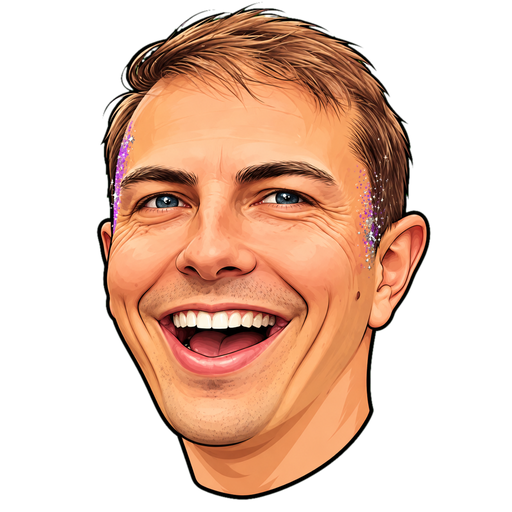

☀️ Overdag: vang de poepluiers, ontwijk het bier.
🪩 's Nachts: vang het bier, ontwijk de luiers.
✨ De gouden glitterluier is altijd raak: +5!
🍾 Fles Salmari: dubbel, 's nachts punten, overdag straf.
Sleep met je vinger, of gebruik de muis of pijltjestoetsen.
Highscore: 0
Score: 0
🌈 Nieuw record, schat! 🌈
Highscore: 0